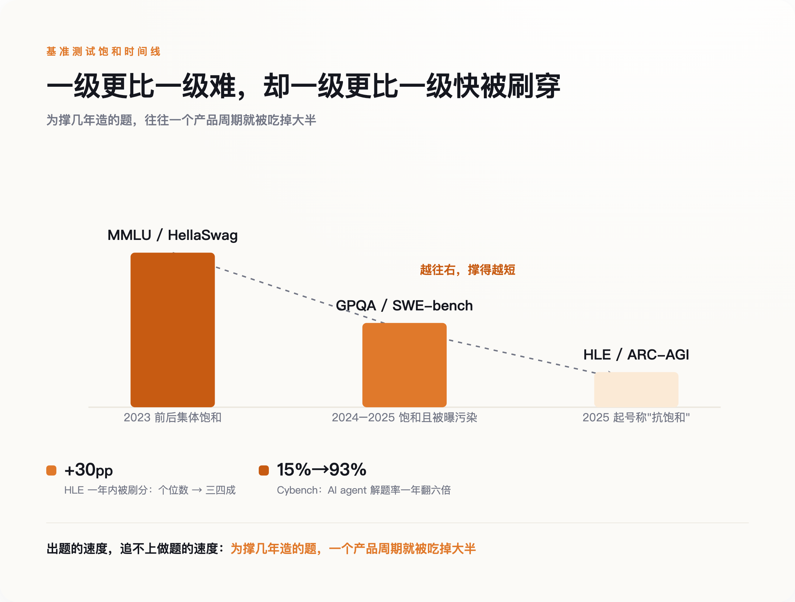
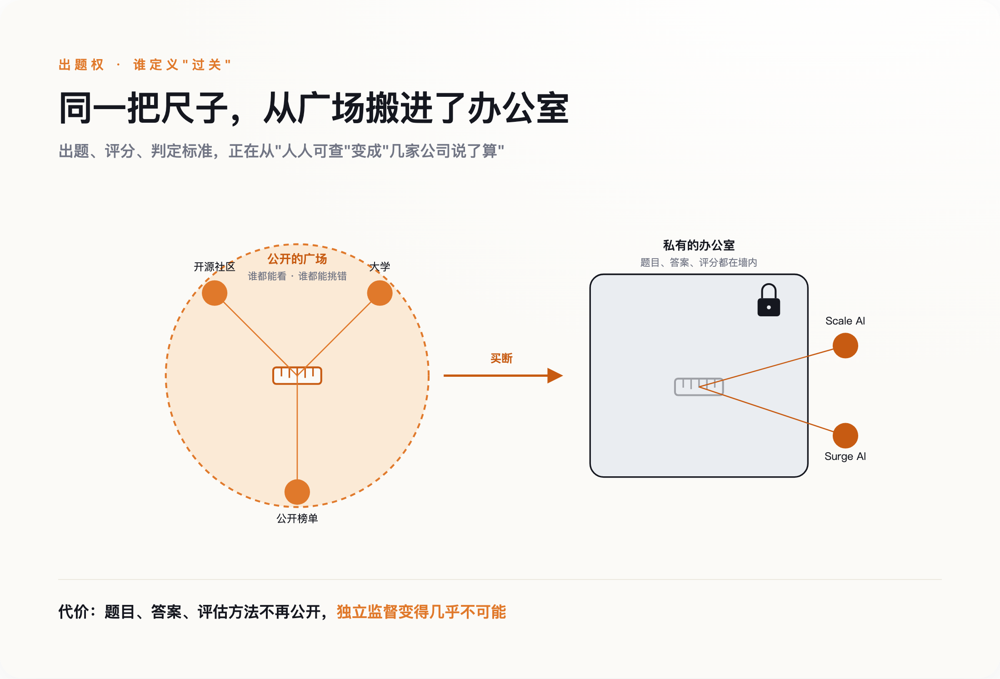
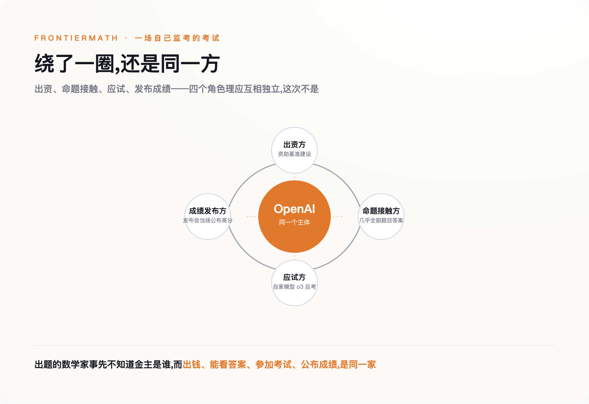

AI 观察
给 AI 出题的数学家，后来发现出钱的是 OpenAI
2026-07-12
计算中…
2024 年底，一批顶尖数学家接了个私活：给一个数学基准出难题，难到能挡住最强的 AI。他们不知道出钱的是谁。直到 Epoch AI 披露——金主是 OpenAI，而且它能看到几乎全部题目和答案；就在同一天，OpenAI 用自家模型在这套题上的高分，做了新品发布会的亮点。出题的人和考试的人，原来是同一个。这不是一次公关翻车，而是一个更大变化的缩影：当 AI 越来越会考试，'谁来给它出题'，正在变成一门只有少数几家公司做得起的生意。
连最有名的分数，出题方自己都不敢认了
先说一个圈内人都知道、圈外人很少听说的分数：SWE-bench。
它是 2024 年 6 月发布的一套编程测试，500 道题全部经过人工核验，让模型去修真实开源项目里的 bug。因为够难、够贴近真实工作，它很快成了各家发布新模型时必报的成绩，几乎等于程序员岗位上的 AI 高考。
然后 OpenAI 自己把它拆穿了。
他们让 Frontier Evals 团队去复核那些模型怎么都做不对的最难题目，结果发现相当一部分题目本身就有毛病——判分条件要么太窄，把正确答案也判错；要么太松，把错误答案也放过。团队负责人 Mia Glaese 给这套测试下了一句很不留情面的判词：它测的与其说是模型会不会编程，不如说"更像是 agent 猜出某个函数该叫什么名字的能力"。此后 OpenAI 在自家发布里不再报告这个分数。
问题不止 SWE-bench 一个。真正麻烦的是一个更基础的机制：一道题只要公开，早晚会进到下一代模型的训练语料里。模型不是做对了题，是提前见过了题。这不是猜测，是量到的——2024 年一篇被 ACL 收录的研究测过主流基准的污染率，MMLU 这套被引用了无数次的老牌考卷，有 29.1% 的题已经渗进了模型的预训练数据，中文的 C-Eval 更高，45.8%。把这些见过的题剔掉重考，一些模型的分数会掉十几个百分点。
顺带说一句，就算没被污染，这些题也未必靠得住。有人把 MMLU 的题逐道人工复核了一遍，发现约 6.5% 的标准答案本身是错的，病毒学那一栏错得尤其离谱。也就是说，我们过去几年拿来判断 AI 聪明不聪明的那把尺子，本身既漏刻度，又有一部分刻度是画错的。
一套题被出题人自己撤下，一套题被证明近三成早就泄了底。但这不是某一套题没出好，而是"公开的题"这个物种，本身就活不长。而它一旦集体失效，出好题的活儿，就只剩极少数人扛得动了——后面那门生意，正是从这里长出来的。
公开的题，注定会被刷穿
一道公开的 AI 考题从出生到失效，大概走三步。
第一步，污染。前面说了，题一公开就会被下一代模型学去，考的越来越是记忆而不是能力。第二步，脚手架军备赛。进了 Agent 时代，模型的分数越来越不取决于模型本身，而取决于外面那层调度它的工程代码——同一个模型，配上更好的外围脚手架，在 SWE-bench 上能多拿十几分。你以为在比模型，其实在比谁的工程队更能凑分。第三步，饱和。等所有人都学会了这两招，题就被集体刷穿，分数挤在天花板上，再也分不出谁强谁弱。
这三步走得有多快，看一个数字就够了。
有一套题叫"人类的最后一场考试"（Humanity's Last Exam），名字就透着悲壮——它是专门为了对抗饱和造出来的，2500 道题，横跨一百多个学科，来自近一千名各领域专家，分布在五十个国家。设计者的原意是让它能撑好几年。结果呢？据斯坦福《AI 指数 2026》的统计，前沿模型在这套"最后考试"上的得分，一年之内涨了大约 30 个百分点，从个位数直接冲进三四成。为了撑几年造的题，一个产品周期就被吃掉大半。
更极端的是网络安全那一栏。同一份报告里，AI agent 解开安全攻防题的比例，一年内从 15% 飙到了 93%。这不是进步曲线，这是断崖。
于是就有了一个循环：MMLU 这批老题 2023 年前后集体饱和，逼出了 GPQA、SWE-bench 这批更难的；这批 2024、2025 年又被刷穿、被曝污染，逼出了"最后考试"、ARC-AGI 这批号称能顶住的新题；而这批新题自己也在一年内被刷掉大半。有研究系统扫过六十套主流文本基准，将近一半已经高度饱和；发布还不到两年的新题里，也有四成出现了饱和迹象。出题的速度，追不上做题的速度。

一级更比一级难，却一级更比一级快被刷穿：为撑几年造的题，一个产品周期就被吃掉大半
<line x1="180" y1="120" x2="510" y2="230" stroke="var(--sub)" stroke-width="2" stroke-dasharray="6,7"/>
<line x1="510" y1="230" x2="820" y2="300" stroke="var(--sub)" stroke-width="2" stroke-dasharray="6,7"/>
<polygon points="820,300 800,288 806,308" fill="var(--sub)"/>
<rect x="120" y="120" width="120" height="220" rx="6" fill="var(--accent-deep)"/>
<rect x="450" y="220" width="120" height="120" rx="6" fill="var(--accent)"/>
<rect x="780" y="290" width="120" height="50" rx="6" fill="var(--accent-soft)"/>
<text x="180" y="102" text-anchor="middle" font-size="20" font-weight="700" fill="var(--ink)">MMLU / HellaSwag</text>
<text x="180" y="360" text-anchor="middle" font-size="16" fill="var(--sub)">2023 前后集体饱和</text>
<text x="510" y="202" text-anchor="middle" font-size="20" font-weight="700" fill="var(--ink)">GPQA / SWE-bench</text>
<text x="510" y="360" text-anchor="middle" font-size="16" fill="var(--sub)">2024–2025 饱和且被曝污染</text>
<text x="840" y="272" text-anchor="middle" font-size="20" font-weight="700" fill="var(--ink)">HLE / ARC-AGI</text>
<text x="840" y="360" text-anchor="middle" font-size="16" fill="var(--sub)">2025 起号称"抗饱和"</text>
<text x="600" y="150" text-anchor="middle" font-size="17" fill="var(--accent-deep)" font-weight="700">越往右，撑得越短</text>
+30pp
HLE 一年内被刷分：个位数 → 三四成
15%→93%
Cybench：AI agent 解题率一年翻六倍
出题的速度，追不上做题的速度：为撑几年造的题，一个产品周期就被吃掉大半
出题人自己最清楚这有多难。François Chollet 是 ARC-AGI 这套推理测试的设计者，一向以"专出 AI 不会、人类却会的题"自居。o3 发布后，他公开承认自己那套题的第一代已经开始饱和——有团队用集成方案在上面拿到了八成多的分。他随即推出更难的第二代，2026 年又挂出带两百万美元奖金的第三代，而所有前沿模型在新题上的得分仍然低于百分之一。一个连续给 AI 出难题的人，得靠不停地重出题、加钱、加难度，才勉强守住"人类还能出 AI 答不上的题"这条线。这本身就说明，出题正在从一件谁都能做的事，变成一件只有极少数人做得动、且越来越贵的事。
那把题藏起来不就行了？不公开，就不会被学去。同一批研究者恰恰测过这一点，结论是反直觉的：藏起来的私有测试集，在抗饱和上并不比公开的题更保险，两者的失效速度没有本质差别。真正更耐用的，不是"藏得严"的题，而是"出得精"的题——由懂行的人反复打磨、专门盯着模型软肋去设计的那种。
这就把问题逼到了一个很现实的墙角：公开赛道基本全灭，而好题又贵又难出。当出题变成一件既烧钱、又需要顶尖专家、还得不断更新的苦活，市场会怎么反应？它会把这件事变成一门生意。
出题，变成了一门时薪上千美元的生意
2024 年 9 月 15 日，一家做 AI 安全的非营利机构公开发了则征集：向全世界的博士和专家征题，谁能出一道难住最强 AI 的题，最高给五千美元一道。出资方是 Scale AI，奖池五十万美元，前五十道每道五千，接下来五百道每道五百。这就是前面那套"人类的最后一场考试"的来历——它不是哪个实验室关起门造的，是花钱从全球专家手里买来的。
买题这件事，正在长成一个完整的产业。过去做 AI 数据标注，找的是便宜劳动力，给图片框个框、给句子打个标签，时薪按几美元算。现在不一样了，模型已经比大多数人会做题，能难住它的题只有该领域最顶尖的人出得来。于是需求彻底倒过来：不再要便宜的手，要最贵的脑子。
一家叫 Surge AI 的公司是这门生意的样本。据多家媒体报道，它一年的营收规模已经做到约十亿美元，却几乎没拿过风投，正式员工只有一百来人——因为它真正的"产能"是外面数万名博士级的专家（较早的报道说两万多，近一年的报道给到近五万）。据报道，医学背景的出题人时薪在两三百到四百多美元，而带过投资、做过高管的专家，时薪能开到五百到一千美元。另一家 Mercor 挂着三万多名承包商，Scale AI 旗下的出题平台据称也集结了几十万人。这些人干的活，说穿了就是坐在电脑前，绞尽脑汁想出一道让最强模型也栽跟头的题目，然后把它卖给需要考 AI 的公司。
这门生意的逻辑很干净：AI 越强，越难被难住，能难住它的题就越值钱，出得起这个价的公司就越少。
问题也正藏在这句话里。当"什么样的题算好题、AI 答对了算不算真会"这套标准，从开源社区、大学、公开榜单，慢慢收拢到几家买得起顶尖专家的商业公司手里，出题权就完成了一次安静的转移。以前这把尺子挂在广场上，谁都能看、谁都能量、谁都能挑错；现在它被搬进了几间办公室，尺子还在，但刻度归谁、量出来给谁看，开始变得不透明。

同一把尺子，从广场搬进办公室：能看的人、能挑错的人，都变少了
公开的广场
谁都能看 · 谁都能挑错
<!-- ruler icon (the exam) at plaza center -->
<g transform="translate(230,240)">
<rect x="-32" y="-11" width="64" height="22" rx="4" fill="var(--paper, #FBF9F5)" stroke="var(--accent-deep)" stroke-width="2.5"/>
<line x1="-21" y1="-11" x2="-21" y2="1" stroke="var(--accent-deep)" stroke-width="2"/>
<line x1="-10.5" y1="-11" x2="-10.5" y2="3" stroke="var(--accent-deep)" stroke-width="2"/>
<line x1="0" y1="-11" x2="0" y2="1" stroke="var(--accent-deep)" stroke-width="2"/>
<line x1="10.5" y1="-11" x2="10.5" y2="3" stroke="var(--accent-deep)" stroke-width="2"/>
<line x1="21" y1="-11" x2="21" y2="1" stroke="var(--accent-deep)" stroke-width="2"/>
</g>
<!-- three open sources around plaza -->
<line x1="230" y1="240" x2="120" y2="130" stroke="var(--accent)" stroke-width="1.6"/>
<circle cx="120" cy="130" r="17" fill="var(--accent)"/>
<text x="120" y="100" text-anchor="middle" font-size="14" fill="var(--ink)">开源社区</text>
<line x1="230" y1="240" x2="340" y2="130" stroke="var(--accent)" stroke-width="1.6"/>
<circle cx="340" cy="130" r="17" fill="var(--accent)"/>
<text x="340" y="100" text-anchor="middle" font-size="14" fill="var(--ink)">大学</text>
<line x1="230" y1="240" x2="230" y2="395" stroke="var(--accent)" stroke-width="1.6"/>
<circle cx="230" cy="395" r="17" fill="var(--accent)"/>
<text x="230" y="435" text-anchor="middle" font-size="14" fill="var(--ink)">公开榜单</text>
<!-- transition arrow -->
<defs>
<marker id="arrow" viewBox="0 0 10 10" refX="8" refY="5" markerWidth="7" markerHeight="7" orient="auto-start-reverse">
<path d="M0,0 L10,5 L0,10 z" fill="var(--accent-deep)"/>
</marker>
</defs>
<line x1="425" y1="240" x2="580" y2="240" stroke="var(--accent-deep)" stroke-width="3" marker-end="url(#arrow)"/>
<text x="502" y="222" text-anchor="middle" font-size="15" font-weight="600" fill="var(--accent-deep)">买断</text>
<!-- right: closed office -->
<rect x="620" y="105" width="290" height="270" rx="18" fill="var(--neutral-soft)" stroke="var(--ink)" stroke-width="2"/>
<text x="765" y="72" text-anchor="middle" font-size="16" font-weight="600" fill="var(--ink)">私有的办公室</text>
<text x="765" y="94" text-anchor="middle" font-size="13" fill="var(--sub)">题目、答案、评分都在墙内</text>
<!-- lock icon -->
<g transform="translate(858,140)">
<path d="M -9 -3 V -13 A 9 9 0 0 1 9 -13 V -3" fill="none" stroke="var(--ink)" stroke-width="2.5"/>
<rect x="-15" y="-3" width="30" height="24" rx="4" fill="var(--ink)"/>
<circle cx="0" cy="9" r="2.6" fill="var(--neutral-soft)"/>
</g>
<!-- ruler icon, faded, inside office -->
<g transform="translate(765,255)" opacity="0.35">
<rect x="-32" y="-11" width="64" height="22" rx="4" fill="none" stroke="var(--ink)" stroke-width="2.5"/>
<line x1="-21" y1="-11" x2="-21" y2="1" stroke="var(--ink)" stroke-width="2"/>
<line x1="-10.5" y1="-11" x2="-10.5" y2="3" stroke="var(--ink)" stroke-width="2"/>
<line x1="0" y1="-11" x2="0" y2="1" stroke="var(--ink)" stroke-width="2"/>
<line x1="10.5" y1="-11" x2="10.5" y2="3" stroke="var(--ink)" stroke-width="2"/>
<line x1="21" y1="-11" x2="21" y2="1" stroke="var(--ink)" stroke-width="2"/>
</g>
<!-- two buyers with exclusive access -->
<line x1="765" y1="255" x2="960" y2="200" stroke="var(--accent-deep)" stroke-width="1.6"/>
<circle cx="960" cy="200" r="17" fill="var(--accent-deep)"/>
<text x="960" y="172" text-anchor="middle" font-size="14" fill="var(--ink)">Scale AI</text>
<line x1="765" y1="255" x2="960" y2="320" stroke="var(--accent-deep)" stroke-width="1.6"/>
<circle cx="960" cy="320" r="17" fill="var(--accent-deep)"/>
<text x="960" y="352" text-anchor="middle" font-size="14" fill="var(--ink)">Surge AI</text>
代价：题目、答案、评估方法不再公开，独立监督变得几乎不可能
这种不透明会带来什么，2024 年底的一桩事已经演示得清清楚楚。
当出题的人，开始给被考的人打工
回到开头那批数学家。他们参与的那套题叫 FrontierMath，一套据说难到能挡住最强模型的高等数学基准。
2024 年 12 月 20 日，就在 OpenAI 发布新模型 o3 的同一天，Epoch AI 公开了一件此前没说的事：这套基准是 OpenAI 出钱资助的，而且 OpenAI 拿到了除一小部分留存题之外几乎所有题目和答案的访问权限。参与出题的多位数学家，事先并不知道金主是它，也不知道对方能看到答案。
把这几件事按时间摆在一起，画面就很清楚了：一家公司出钱，请一批专家出题，题目和答案它自己能看，然后它用自家模型在这套题上的高分，作为新产品发布会的亮点。出题的、判卷的、考试的、宣布成绩的，绕了一圈是同一方。

同一方绕了一圈：当出钱、能看答案、参加考试、公布成绩都是同一家，分数就失去了独立性
<!-- loop ring connecting the four roles, clockwise -->
<path d="M 450,96 A 154,154 0 0,1 604,220" fill="none" stroke="#9AA4B2" stroke-width="2.5" marker-end="url(#arrow)"></path>
<path d="M 604,220 A 154,154 0 0,1 450,344" fill="none" stroke="#9AA4B2" stroke-width="2.5" marker-end="url(#arrow)"></path>
<path d="M 450,344 A 154,154 0 0,1 296,220" fill="none" stroke="#9AA4B2" stroke-width="2.5" marker-end="url(#arrow)"></path>
<path d="M 296,220 A 154,154 0 0,1 450,96" fill="none" stroke="#9AA4B2" stroke-width="2.5" marker-end="url(#arrow)"></path>
<!-- spokes: same entity behind every role -->
<line x1="450" y1="220" x2="450" y2="120" stroke="#F0C79A" stroke-width="2" stroke-dasharray="3,5"></line>
<line x1="450" y1="220" x2="562" y2="220" stroke="#F0C79A" stroke-width="2" stroke-dasharray="3,5"></line>
<line x1="450" y1="220" x2="450" y2="320" stroke="#F0C79A" stroke-width="2" stroke-dasharray="3,5"></line>
<line x1="450" y1="220" x2="338" y2="220" stroke="#F0C79A" stroke-width="2" stroke-dasharray="3,5"></line>
<!-- center hub: OpenAI -->
<circle cx="450" cy="220" r="82" fill="var(--accent)"></circle>
<text x="450" y="212" text-anchor="middle" fill="#fff" font-size="27" font-weight="700" font-family="PingFang SC,Noto Sans CJK SC,sans-serif">OpenAI</text>
<text x="450" y="238" text-anchor="middle" fill="#fff" font-size="14" opacity="0.85" font-family="PingFang SC,Noto Sans CJK SC,sans-serif">同一个主体</text>
<!-- top node: 出资方 -->
<circle cx="450" cy="70" r="52" fill="#fff" stroke="#D7DCE3" stroke-width="2"></circle>
<text x="450" y="63" text-anchor="middle" fill="var(--ink)" font-size="17" font-weight="600" font-family="PingFang SC,Noto Sans CJK SC,sans-serif">出资方</text>
<text x="450" y="83" text-anchor="middle" fill="var(--sub)" font-size="12.5" font-family="PingFang SC,Noto Sans CJK SC,sans-serif">资助基准建设</text>
<!-- right node: 命题接触方 -->
<circle cx="646" cy="220" r="52" fill="#fff" stroke="#D7DCE3" stroke-width="2"></circle>
<text x="646" y="213" text-anchor="middle" fill="var(--ink)" font-size="17" font-weight="600" font-family="PingFang SC,Noto Sans CJK SC,sans-serif">命题接触方</text>
<text x="646" y="233" text-anchor="middle" fill="var(--sub)" font-size="12.5" font-family="PingFang SC,Noto Sans CJK SC,sans-serif">几乎全部题目答案</text>
<!-- bottom node: 应试方 -->
<circle cx="450" cy="370" r="52" fill="#fff" stroke="#D7DCE3" stroke-width="2"></circle>
<text x="450" y="363" text-anchor="middle" fill="var(--ink)" font-size="17" font-weight="600" font-family="PingFang SC,Noto Sans CJK SC,sans-serif">应试方</text>
<text x="450" y="383" text-anchor="middle" fill="var(--sub)" font-size="12.5" font-family="PingFang SC,Noto Sans CJK SC,sans-serif">自家模型 o3 应考</text>
<!-- left node: 成绩发布方 -->
<circle cx="254" cy="220" r="52" fill="#fff" stroke="#D7DCE3" stroke-width="2"></circle>
<text x="254" y="213" text-anchor="middle" fill="var(--ink)" font-size="17" font-weight="600" font-family="PingFang SC,Noto Sans CJK SC,sans-serif">成绩发布方</text>
<text x="254" y="233" text-anchor="middle" fill="var(--sub)" font-size="12.5" font-family="PingFang SC,Noto Sans CJK SC,sans-serif">发布会当场公布高分</text>
出题的数学家事先不知道金主是谁,而出钱、能看答案、参加考试、公布成绩,是同一家
这不是"作弊"两个字能概括的。OpenAI 没有明确的证据表明它把答案喂给了模型，Epoch 也留了一部分模型碰不到的题。真正的问题比作弊更结构性：当一场考试的出资方、命题接触方、参考者、成绩发布方高度重叠，这个分数还能不能当作独立证据，本身就说不清了。它可能是真的，但你没有办法验证它是真的——而一个无法被独立验证的分数，在科学上就约等于没有。
出题人自己也是这么想的。这套题的首席数学家 Elliot Glazer 事后说得很克制：在独立评估完成之前，他们没法为这个分数背书。至少六名参与的数学家表示，如果早知道是这么个安排，未必还会接这活。批评者的话就重得多，Gary Marcus 在达沃斯直接说，这种做法从科学角度看是操纵性的、是可耻的。
我知道，讲到这儿很容易滑向一个爽快的结论：这些公司在联手骗我们。但先按住这个冲动。FrontierMath 之所以值得反复说，不是因为它证明了谁坏，而是因为它把一个结构问题摆到了台面上——当出题权攥在被考的人手里，哪怕每个人都是善意的，出来的分数也失去了它最值钱的那个属性：可信。
而这个结构问题，比"某家公司不老实"要难对付得多。
但这不是阴谋，是更难办的事
普林斯顿的计算机科学家 Arvind Narayanan，《AI 蛇油》一书的作者，不同意"AI 太聪明所以没法评估"这个前提。在他和合作者的分析里，评估之所以频频失灵，根子不在 AI 超神，而在评估这门手艺本身太糙。他数过几种常见毛病：只盯着准确率一个指标，不算模型跑一次要花多少钱；把"给模型开发者看的评估"和"给应用开发者看的评估"混为一谈；很多测试根本没留出独立的测试集，模型一学就过拟合，看着会做其实是背下来了；还有整个领域缺乏标准，换个人复现就得出不一样的结果。
它把我们从阴谋论里拽了出来——评估失灵不需要谁使坏，方法粗糙就够了。
但把 Narayanan 的话听完，会发现事情反而更棘手，而不是更轻松。因为这里其实有两种成因，指向两套完全相反的解法。
第一种成因，是"AI 已经强到公开手段测不了它"。如果你信这个，那结论几乎必然是：把出题权交给那些还追得上 AI 的机构——也就是最有钱、最能雇到顶尖专家的那几家公司和实验室。私有化在这个逻辑里不是问题，是答案。
第二种成因，就是 Narayanan 说的，评估科学太粗糙。如果你信这个，那做法就该是反的：把评估当成一门可以公开做好的科学，定标准、留测试集、算成本、可复现，让大学、独立机构、开源社区都能参与和监督。
麻烦在于，现实正在照着第一套解法走，却把第二套解法需要的条件一点点抽掉。当最好的题、最贵的专家、最新的评估方法都被几家公司买断，"任何机构都能把评估当科学做好"这句话就成了空话——你连题都看不到，拿什么去做好它。前面那份扫过六十套基准的研究早就提醒过：把题藏起来并不能让它更耐用。也就是说，私有化连它自己承诺的那点好处都不一定兑现，却实实在在地掐断了公开监督的可能。
两种成因吵到最后，会合流到同一个缺口上：这个世界正越来越依赖 AI 的分数做决定，却越来越没有一个大家都信得过的、中立的考官。你可能会说，英美这两年不是都建了官方的 AI 安全研究所吗？确实建了。但这些机构眼下要么还得回头向那几家商业公司买题，要么手里没有自己的、能持续更新的题库——中立的裁判席位设好了，能用的考卷却还没着落。
而最先一头撞上这个缺口的，不是某个消费者，是监管。
而监管，已经把身家押在这个空缺上
想管住 AI，第一步是得能判断一个模型行不行、安不安全。而判断的依据，绕来绕去还是评估、还是分数。
欧盟的《AI 法案》就是这么设计的。它给最强的一批模型划了条线——训练算力超过一个天文数字（10 的 25 次方次浮点运算）就算"具有系统性风险"，要接受更严的合规审查，配套的行为准则 2025 年 8 月已经生效。真违规了也有罚则——专门针对通用大模型提供方的那一档，最高罚一千五百万欧元，或全球营业额的百分之三；只有触到被明令禁止的 AI 用途，上限才抬到三千五百万欧元、百分之七。听起来很有牙齿。
但翻开条款细看，会看到一个很诚实、也很尴尬的措辞。法案第 15 条第 2 款讲到准确性的时候，用的词是"鼓励开发"相关的评估基准。鼓励开发，意思是它还不存在。也就是说，欧盟一边把合规的判定押在"模型评估"这一环上，一边在正式法条里承认：能作数的权威评估标准，现在还没有。地基上摆着一栋楼，地基自己还在图纸阶段。
美国这边也没好到哪去。管标准的机构 NIST，已经在它的 AI 风险文件里，把"基准饱和"正式列成了一类需要警惕的风险——等于官方盖章确认：我们用来量 AI 的尺子，正在集体失灵。
把这两件事和前面拼起来，链条就完整了。公开的题在批量失效，好题在向几家公司集中，而监管又必须依赖题来执法。于是"谁来给 AI 出题"这个看起来很技术、很小众的问题，一路顶到了最上面：它决定了监管拿什么去管、企业拿什么去选、我们凭什么相信一个模型是安全的。出题权在谁手里，某种程度上就是"AI 由谁说了算"这件事的一个隐蔽入口。
谁来当这个考官
再回到那批数学家。他们的经历里最刺人的，不是有没有作弊，而是他们出的题、他们判的卷，最后成了别人发布会上的高分，而他们自己都没法为那个分数背书。他们最先失去的，是对自己那个分数的解释权。
所以下一次，你在某场发布会、某篇通稿里看到一个漂亮的跑分——某某模型在某某基准上又刷新了纪录——先别急着记住那个数字。可以多问三个笨问题：这道题是谁出的？出完之后，谁能看到答案？以及，是谁，为这套题付了钱。
这三个问题，比分数本身诚实得多。
↑